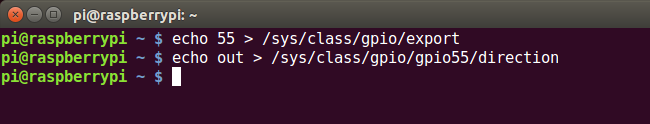
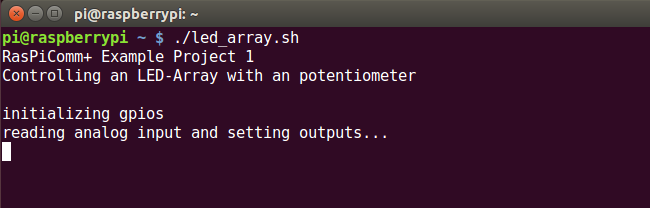

In this sample project we will write a small application that allows us to use a slider to control a LED-Array.

If you want to follow along you'll need the following parts:
| Part | RS Stock Number |
|---|---|
| Raspberry Pi | 8111284 |
| RasPiComm+ Mainboard | TBA |
| RasPiComm+ 8-Port Output Module | TBA |
| RasPiComm+ 8-Port Analog Input Module | TBA |
| LED-Array | 2465689 |
| Standard Type Slide Potentiometer | 2499402 |
| Breadboard / Resistors |
sudo ./rpc+setup.sh
In this example, we assume that you plugin the Analog Input Module in the slot 1 and the Output Module in slot 2 - you may choose different slots, but you will have to adjust the code to take the different module slots into account.

You may want to view the getting started video for the RasPiComm+
Plug the Slider and the LED-Array into the Bread board, as shown in the image below.

Now we connect the parts, we start by connecting the Slider with the Analog Input Module:
Connect the Slider to the Port 0 of the Analog Input Module.
We then connect the LED-Array with the Output Module.
Connect each Output of the Output Module to the LED-Array in turn.
After setting up the bread board, it should look something like this:

Before we can use the outputs to change the LED-Array, we need to initialize them in linux first.
Linux represents all GPIOs as consecutive numbers, starting from 0 and going to as many as your hardware supports. So if we want to tell Linux to set the output pin of an module, we need to use the correct number. The raspberry pi itself reserves the first 54 GPIOs for itself, which means that the GPIOs of the RasPiComm+ start at 55 and going up.
The following table shows the Linux GPIO to Output Pin mapping:
| Output Pin | Linux GPIO |
|---|---|
| Output 0 | 55 |
| Output 1 | 56 |
| Output 2 | 57 |
| Output 3 | 58 |
| Output 4 | 59 |
| Output 5 | 60 |
| Output 6 | 61 |
| Output 7 | 62 |
Now armed with this knowledge we can configure the GPIOs as outputs in linux. This is a simple two-step process for each output. First, we'll export the gpio, that is: tell Linux that we want to access the GPIO from the commandline and second configure it as an output, that is tell Linux that the GPIO in question is an output (and not an input) so that we are able to set it's value.
echo 55 > /sys/class/gpio/exportecho out > /sys/class/gpio/gpio55/directionAfter executing those two commands, the GPIO 55 - which corresponds to the first Pin of the Output Module - is set to 0 (low).
Before we write the application that reads the current slider value and sets the LED-Array, we will verify our setup to see if it's working as expected.
To do this, we execute a few commandline commands to see if the slider and the LED-Array is working.
First, we'll verify the Slider:
cat /proc/rpc+/module1/analoginput0
We expect to read back a value near the minimum (0) or the maximum (2^12 = 4096)
cat /proc/rpc+/module1/analoginput0Confirm that the value returned is near the opposite side of the scale
Second, we'll verifiy the LED-Array
echo 1 > /sys/class/gpio/gpio55/valueecho 0 > /sys/class/gpio/gpio55/valueNow we're finally setup to write a simple application that can take advantage of our hardware setup!
The following pseudo code will represent the application:
main() {
/* initialize the gpios */
...
/* loop forever! */
while (true)
{
/* read input from slider */
...
/* using the slider input, compute the outputs that we want to set */
...
/* set the outputs */
...
};
}
We create an bash script, that you can download here, named led_array.sh with the following content:
#!/bin/bash
# RasPiComm+ Example Project
# prints general info
function print_info() {
echo "RasPiComm+ Example Project 1"
echo "Controlling an LED-Array with an potentiometer"
echo ""
}
# exports the supplied gpio and configues it as an output
function init_gpio() {
if [[ ! -d /sys/class/gpio/gpio$1 ]]; then
echo $1 > /sys/class/gpio/export
sleep 0.5 # insert a small delay, as the gpio is not instantly available and the direction change may fail
fi
echo out > /sys/class/gpio/gpio$1/direction
}
# sets the specified output high
function set_output() {
echo 1 > /sys/class/gpio/gpio$1/value
}
# sets the specified output low
function clear_output() {
echo 0 > /sys/class/gpio/gpio$1/value
}
# initializes the gpios
function init_gpios() {
echo "initializing gpios"
init_gpio 55;
init_gpio 56;
init_gpio 57;
init_gpio 58;
init_gpio 59;
init_gpio 60;
init_gpio 61;
init_gpio 62;
}
# sets the leds according to the supplied value
function set_led() {
local value=$1
local led_count="$(( ($value / 500) ))"
# debugging statement
#echo "-> led_count: ${led_count}"
local index=0
while [[ $index -lt 8 ]]
do
if [[ $index -lt $led_count ]]; then
set_output $(($index+55))
else
clear_output $(($index+55))
fi
index=$(($index+1))
done
}
# read the value of the analog input into the variable VALUE
function get_analog_value() {
# we read the value of the of port 0 of the analog input in module 1
VALUE=`cat /proc/rpc+/module1/inputanalog0`
}
function main() {
# print the startup info
print_info;
# initialize the gpios
init_gpios;
echo "reading analog input and setting outputs..."
# keep looping forever
while [[ 1 ]]
do
get_analog_value;
local analog_value=$VALUE
# when debugging, uncomment the following line to view the analog value
#echo $analog_value;
set_led $analog_value;
# when debugging, uncomment the following line!
# sleep 1;
done
}
# main entry point
main;
Then we start the script and see the following output:
Now we can use the slider to control the LED-Array!
If you have questions or feedback, please check out the following Resources:
| Resource | Url |
|---|---|
| IndieGoGo Campaign | IndieGoGo Campaign |